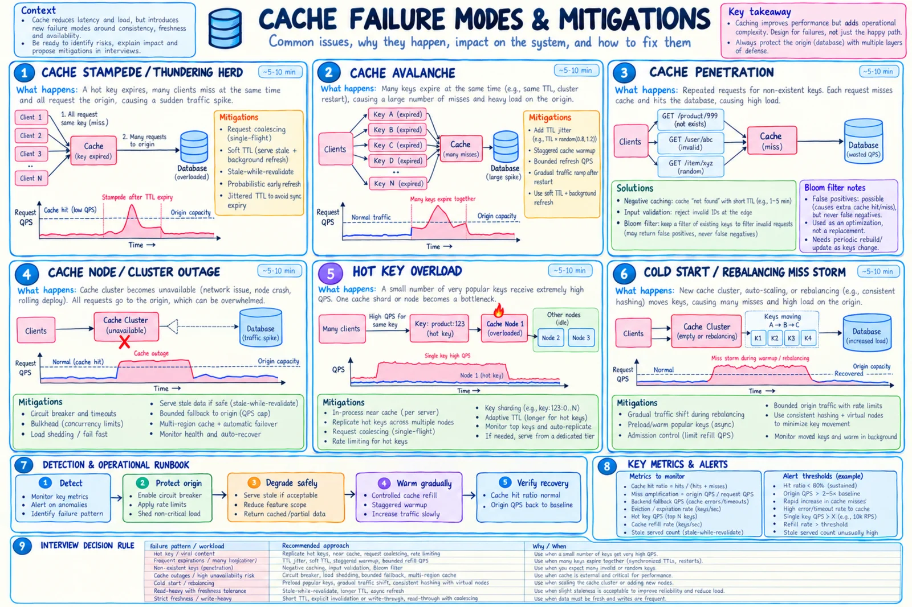

Topic · Caching in Depth
Cache Failures and Operations
Design the failure path before promising latency: stampede, avalanche, penetration, outages, and the metrics that catch them.


Quick Revision
- Stampede (one hot key expires) → single-flight, soft TTL, early refresh.
- Avalanche (many expire / empty restart) → TTL jitter, staggered warming, capped refill.
- Penetration (missing keys) → validation, negative cache, Bloom filter, rate limit.
- Outage → circuit breaker, bounded DB fallback, stale serving, load shedding.
- Know if the cache is optional acceleration or a required stateful dependency.
Reliability
- Optional vs required - fallback that's fine for product metadata may be unsafe for sessions, rate limits, leases, or write-behind state.
- Origin protection - circuit breakers, per-endpoint/tenant concurrency limits, rate limiting, load shedding, bounded fallback QPS, stale serving, reduced scope, retry budgets with backoff + jitter, gradual refill.
cache timeout → open circuit briefly → cap origin concurrency/QPS → serve stale where permitted → bypass only critical reads → shed optional traffic → refill gradually after recovery
Metrics
- Performance - hit and byte-hit ratio per key class, cache p50/p95/p99, miss-path and origin latency, origin QPS avoided, serialization time.
- Capacity - memory, fragmentation, item count and size, eviction/expiration rates, admission rejects, per-shard skew.
- Correctness - stale-read samples, version regressions, invalidation lag/failures/DLQ, negative-cache hits, read-after-write violations.
- Resilience - cache errors/timeouts, fallback QPS, single-flight waiters, lock timeouts, refill rate, cold-start and failover time.
Trade-offs
| Choice | Benefit | Cost / risk |
|---|---|---|
| Negative caching | Protects origin from repeated misses | Can hide newly created data |
| Bloom filter | Cheap rejection before origin | False positives, rebuild path |
| Serve stale on failure | Availability, origin protection | Users see old data |
| Fail closed | Correctness and security | Lower availability |
Failure modes
- Stampede - single-flight, SWR, early refresh, origin concurrency cap.
- Avalanche - TTL jitter, staggered warming, gradual traffic, bounded refill.
- Penetration - validation, negative cache, Bloom filter, rate limit.
- Outage crushes DB - circuit breaker, bulkhead, bounded fallback, stale, shedding.
- Cold-start miss storm - preload hot keys, slow ramp, admission control.
- Negative cache hides new entity - invalidate on create, short TTL.
- TTL too short / too long - origin load vs stale data; base on staleness + invalidation.
- Cache pollution - admission policy, size limits, bypass low-reuse scans.
- Giant value → latency/OOM - cap size, cache IDs/chunks, paginate.
- Mass invalidation storm - versioned namespace, paced deletion, natural expiry.
- Blind retries amplify outage - deadlines, backoff + jitter, retry budget.
- Write-behind loses data - durable log/queue, replication, checkpoints, replay.
- Tenant data leak - namespaced keys, authorize before lookup.
- High hit ratio, bad p99 - track bytes, per-shard p99, miss-path tails.
- Metrics hide failure - per key class, shard, region, and miss reason.
Interview practice
Answer aloud, then reveal.
What happens if Redis goes down?
Open a circuit, cap DB fallback, serve stale where safe, shed optional traffic, refill gradually - never send everything to the DB at once.
How do you prevent a stampede?
Single-flight/coalescing, stale-while-revalidate, early refresh, TTL jitter, bounded origin concurrency.
What is cache avalanche?
Many keys expire or vanish together → broad origin spike. Stagger TTLs, warm gradually, cap refill.
How do you handle nonexistent-key attacks?
Validate inputs, briefly negative-cache misses, optional Bloom filter (false positives, no false negatives), rate-limit.
Why can a 99% hit ratio still be bad?
The 1% may cluster at peak, be expensive, or dominate p99; large values or one hot shard make hits slow too.
Microsoft Senior SE (Mar 2026): excess misses - size or policy?
Break misses down by reason (absent, expired, evicted, invalidated, bypassed); compare working set vs memory, eviction rate, TTL, reuse, shard skew, cold starts.